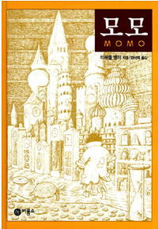
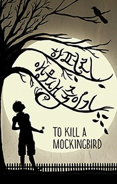
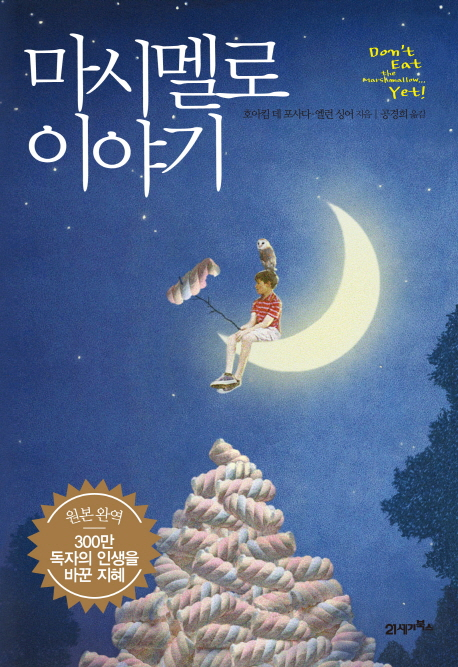

책
- 
모모
낡아빠진 헐렁한 남자 웃옷을 입고, 까만 고수머리를 한 여자아이 모모, 현자 같은 청소부 할아버지 베포, 언제나 끊임없이 이야기가 샘솟는 청년 기기, 사람들에게 시간을 주는 호라 박사, 거북 카시오페이아, 그리고 언제나 자기 시간을 자기가 가장 재밌게 쓸 수 있는 아이들…… 바로 자기에게 주어진 삶의 의미를 찾을 줄 알고 가장 재밌게 살아가고 있는 이들이다.
끊임없는 이야기와 모험과 상상력 속에서 행복과 풍요로움을 즐기던 사람들한테 시간을 빼앗아 목숨을 이어가는 회색 신사들이 나타나 그 즐거움을 모두 빼앗아 간다. 모모, 호라 박사와 거북 카시오페이아는 일생일대의 모험을 벌이며 사람들에게 시간을 되찾아 준다. - 
앵무새 죽이기
1930년대 미국의 어느 작은 마을 메이콤을 배경으로 펼쳐지는 이 소설은 그 시대의 명암을 그대로 드러낸다. 주인공 스카웃과 항상 붙어 다니는 오빠 젬과 친구 딜, 변호사인 아빠 애티커스 핀치, 이웃에 사는 은둔자 부 래들리 등이 중심이 되어 펼쳐 보이는 이야기는 출간된 지 50년이 넘은 지금까지도 정의와 양심, 그리고 용기와 신념을 말할 때 빼놓을 수 없는 작품이 되었다.
- 
마시멜로 이야기
조너선은 네 살 때 스탠포드 대학에서 진행된 실험에 참여했다. 아이들은 각자의 방에서 달콤한 마시멜로를 하나씩 받는다. 그리고 15분 간 먹지 않으면, 상으로 한 개를 더 주겠다는 제안을 받는다. 진행자는 충분히 설명한 후 아이와 마시멜로를 남겨두고 방 밖으로 나간다. 혼자 남은 아이들은 어떻게 반응할까? 몇몇은 참지 못하고 먹어치웠고, 몇몇은 끝까지 기다려 상을 받았다. 하지만 이 실험은 여기서 끝나지 않는다. 10여 년 후...
애플리케이션

V LIVE
네이버에서 제공하는 글로벌 동영상 라이브 서비스로, '브이앱(V-App)'이라고도 불린다. 인터넷 및 스마트폰 앱에서 이용이 가능하다. 한류 아이돌 스타나 배우 등 인기 연예인이 라이브로 방송을 진행해 팬과 소통하는 것을 목적으로 하며, 시청자들은 실시간으로 댓글을 남길 수 있다.
방탄소년단 보러가기-
브레인 아웃
다소 넌센스적인 퀴즈를 풀어가는 퍼즐류의 형식 게임이다.
★ 이 게임의 매력 ★
1. 상식을 따르지 않는 게임 플레이
2. 쉽고 재미있는 즐거운 퍼즐 프로세스
3. 재미있는 음악과 깨끗하고 간단한 게임 UI
4. 절대적으로 예기치 않은 게임 답변 
TIKTOK
틱톡은 ‘숏 비디오 플랫폼’으로, 쉽게 말해 카메라 어플과 SNS를 합쳐 놓은 포맷이다. 인스타그램으로 치면 스토리를 찍어서 피드에 올리는 느낌! 영상 찍는 법은 간단하다. 마음에 드는 노래와 필터를 골라서 조합하면 된다.